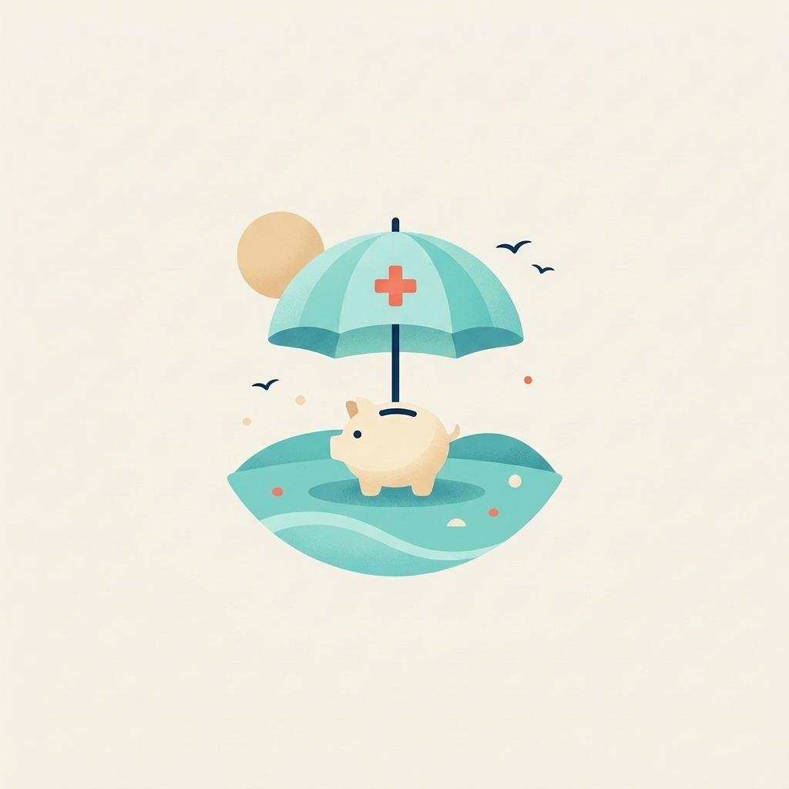
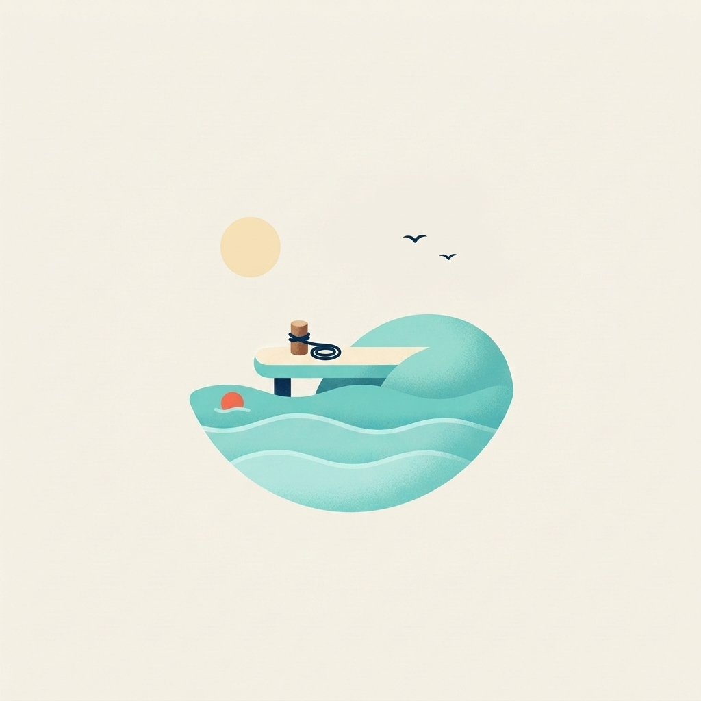

Birikim Hedefi — Gün Sonu Vitrini
Yön: Kâşif · Söz: "Hedefini koy, yola çık."
1 · Yön çalışması
Üç yönün ruhunu taşıyan sahne; Kâşif seçildi ve iyi çalışan ekran korundu.


2 · Görsel dünya · Moodboard
Kâşif palatının dört karesi: sahne, nesne, doku, ışık ve renk.


3 · Tasarım sistemi · token'lar
DESIGN.md §2 — palet ve görev katmanı.
| Palet | Değer | Görev token'ı | Kullanım |
|---|---|---|---|
| #0B7A70 | eylem | Birincil eylem zemini (koyu turkuaz) | |
| #1FBFAE | vurgu, seçili zemin | Marka ana rengi: büyük alan, illüstrasyon, süs | |
| #CDF1EC | yüzey-cukur | Boş kanallar, ilerleme yuvası | |
| #E9FAF8 | yüzey-soft | Sakin panel zemini | |
| #0E2A47 | metin-ana | Başlık ve gövde yazısı | |
| #F4F1EA | yüzey-sayfa | Sıcak kırık beyaz zemin |
4 · Kontrast tablosu
DESIGN.md §3 — hesap scripts/kontrast.mjs, WCAG 2.1.
| Çift | Oran | Normal AA | Büyük/arayüz |
|---|---|---|---|
| metin-ana / kart | 14,57:1 | ✓ | ✓ |
| metin-ikincil / kart | 5,12:1 | ✓ | ✓ |
| metin-ters / eylem | 5,21:1 | ✓ | ✓ |
| eylem-secili-metin / turkuaz zemin | 6,33:1 | ✓ | ✓ |
| hata-metin / kart | 6,54:1 | ✓ | ✓ |
| metin-ters / marka turkuazı | 2,30:1 | ✗ yasak | ✗ |
5 · Tipografi
DESIGN.md §4 — Manrope, tek aile; tabular-nums sayısal her yerde.
Gövde 14/22: küçük adımlar büyük yolculuklara döner; birikim hedefin seni bekliyor.
İkincil 14/22: destekleyici açıklama, AA garantili.
7.500,00 TL/ay · hedef 60.000,00 TL · 1 Temmuz 2027
6 · Bileşenler · açık ve koyu
Örnek: ilerleme halkası ve eylem düğmesi, iki temada.
Açık
Koyu
7 · İllüstrasyon seti
Altı kategori, boş durum ve başarı — sekiz görsel, tek el.





8 · Prototip
Tıklanabilir 8 ekranlı akış; erişilebilirlik turundan onarılmış hâliyle.
Prototipi aç — site/index.html


9 · Kampanya
Duyuru kartı prototipte canlı; görsel parçalar ve videolar aşağıda.


Animasyonlu post (CSS keyframes, JS'siz):
10 · Erişilebilirlik
WCAG 2.2 AA denetimi: 2 ihlal → 0. Üç bulgu:
| # | Bulgu | Düzeltme |
|---|---|---|
| 1 | Turkuaz zeminde %80 opak etiket 4,2:1 (1.4.3) | Opaklık kaldırıldı, tam lacivert |
| 2 | İlerleme halkasında alt metni yok (1.1.1) | aria-label statik + dinamik |
| 3 | Onay kutusu 13×18 dokunma hedefi (2.5.8) | 26×26'ya büyütüldü |